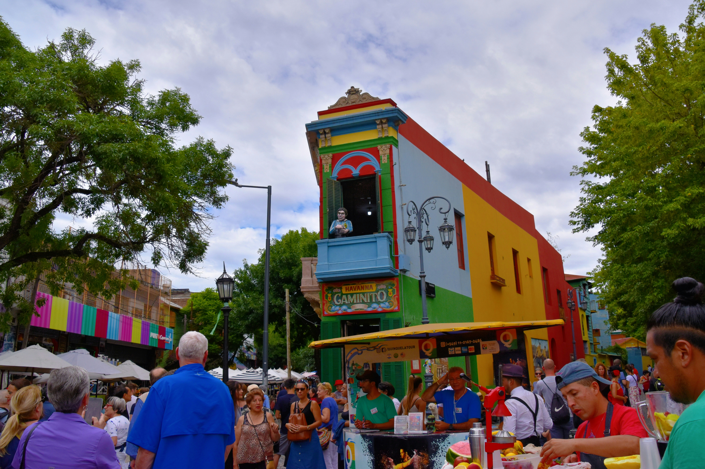
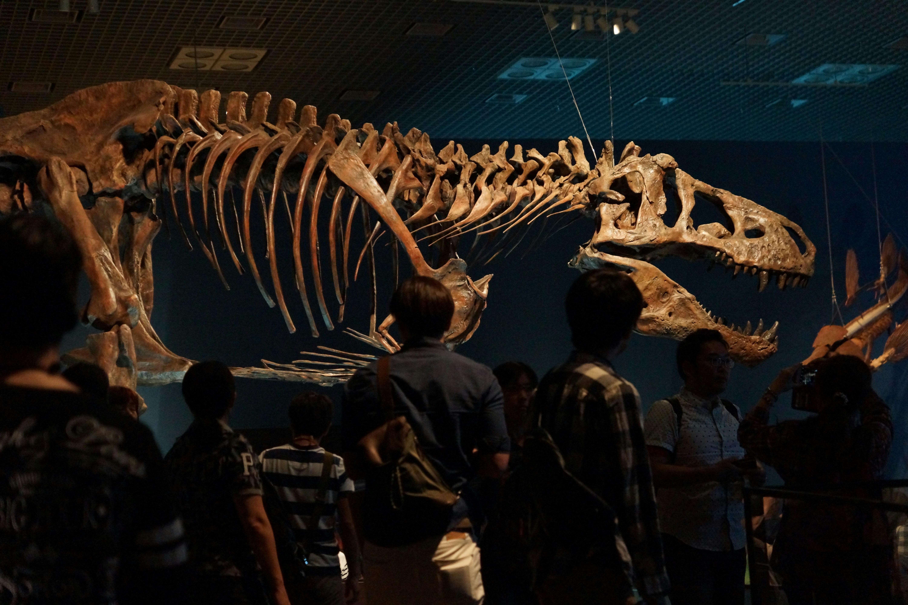

Descubrí Aires Buenos
Aires Buenos es una ciudad llena de historia, cultura, pasión y lugares que no se
encuentran en ningún otro rincón del mundo. Entre sus calles, plazas y barrios se
esconden experiencias para todos los gustos: desde conocer a la presidenta más elegante
de la ciudad hasta disfrutar de una partida de truco con los vecinos.
En esta sección vas a encontrar algunos de los lugares más destacados de Buenos Aires,
cada uno con su propia personalidad, actividades y eventos especiales.
Podés recorrer la Casa Rosada de la Pantera Rosa, conocer la historia del
Club Atlético Falta Envido en Caminito del Falta Envido o poner a prueba tus conocimientos en el
curioso Museo de Ciencias (NO) Exactas.
Prepará el mate, ponete cómodo y empezá a recorrer una Buenos Aires donde cada esquina
tiene una historia y nunca se sabe con qué te vas a encontrar.
Lugares destacados
La Casa Rosada de la Pantera Rosa
La Casa Gobierno que se encuentra ubicada en
Plaza de Mayo, Microcentro.
Es la sede presidencial más extravagante de Buenos Aires, completamente pintada de rosa y
habitada por la famosa Pantera Rosa, quien fue elegida presidenta de la ciudad. Desde su
despacho, la presidenta Pantera gobierna con elegancia, misterio y muy pocas palabras.
Actividades
- Visitar el despacho presidencial.
- Conocer la sala de reuniones secreta.
- Sacarse fotos con la estatua de la Pantera.
Eventos especiales
Una vez al año se celebra el Día Nacional del Rosa, con desfiles, disfraces y miles de
globos rosas por Plaza de Mayo.
Caminito del Falta Envido

El colorido paseo se encuentra ubicado en
La Boca, se convirtió en el corazón del Club Atlético Falta Envido, el equipo de fútbol más querido del barrio.
Las paredes están cubiertas de murales de sus jugadores, banderas y cartas gigantes de
truco. Según la leyenda, el club nació cuando un grupo de vecinos decidió resolver una
discusión futbolera jugando una partida de truco.
Actividades
- Recorrer los murales del club.
- Visitar el Museo del Falta Envido.
- Conocer la cancha histórica.
- Comprar camisetas.
- Desafiar a los vecinos a una partida de truco.
Eventos especiales
Cada domingo se realiza la feria "Cantale que no tiene nada", acompañada de tango,
música y puestos de comida.
Museo de Ciencias (NO) Exactas

El museo se encuentra ubicado en el corazón de la localidad de Caballito,
Parque Centenario, allí conviven dinosaurios gigantes, animales prehistóricos y
criaturas de todas las épocas. La atracción principal es el enorme T-Rex Porteño, que
según la leyenda aprendió a decir “che” antes de extinguirse.
Actividades
- Recorrer las salas de fósiles.
- Conocer al famoso T-Rex que supuestamente dice "che".
- Buscar meteoritos escondidos entre las vitrinas.
- Participar en excavaciones donde nunca se sabe qué se va a encontrar.
Eventos especiales
Todos los sábados se realiza la "Juntada Científica del Conurbano",
donde especialistas intentan responder preguntas fundamentales como por qué el
colectivo siempre llega cuando empezás a caminar, dónde desaparecen las medias y
si un dinosaurio podría cebar un mate.